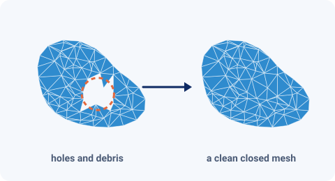
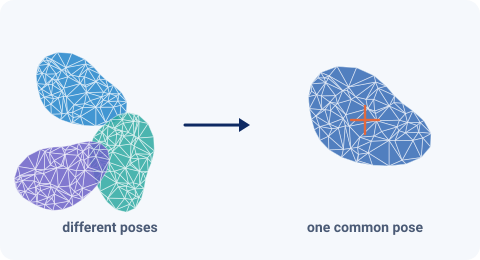
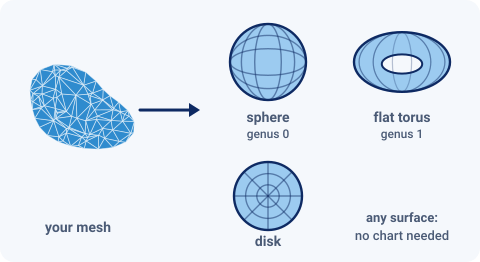

The workflow
From meshes to statistics
In ER3DS every step is a tab of the window. The first five tabs depend on the kind of surface; the tabs after them are shared by all kinds. This page walks through them, with pictures.
First: which kind of surface?
Count the handles of your meshes. A mesh without any tunnel through it (a ball, a tooth, a bone without a canal) is genus 0; one tunnel (a ring, a vertebra with its spinal canal) is genus 1. Do not mix meshes of different genus in one analysis: the Preprocessing step reports the topology of every mesh and skips one of the wrong type, with the reason.
-
Preprocessing
The analysis needs closed meshes of the right genus. This step checks every mesh and repairs what can be repaired. For genus 0 it tries, in order and only while the mesh is not yet genus 0: closing holes, cutting and capping handles, Poisson surface reconstruction and, as a last resort, volumetric closing (which can change the shape). Each repair can be switched off, and the mesh is finally simplified.

Illustration (a drawing of the idea, not program output). A mesh with a hole becomes a clean closed mesh. -
Alignment
Puts the meshes in one frame so that they can be compared. It always does two things:
- Centering: the centroid of the surface of every mesh becomes the origin. Only a translation: sizes and orientations are untouched.
- One pose: every mesh is rotated into the pose of the most central mesh, and the remaining distance to it is reported (a warning above 35 % of the size).

Illustration (a drawing of the idea, not program output). Different positions and poses become one common pose. -
Parameterization
Every mesh is mapped onto a standard domain, a sphere for genus 0, a flat torus for genus 1 and a disk for disks, and sampled on a regular grid. All shapes then share one grid, which is what makes the registration possible.

Illustration (a drawing of the idea, not program output). A mesh is mapped onto a sphere, a flat torus or a disk, depending on its kind. -
Registration
Finds the correspondence, and with it the mean shape. The elastic SRNF registration (the default) moves the points of every shape over its surface (all smooth re-labelings) and rotates it so as to minimize the distance to the mean between the square-root normal fields (SRNF) of the surfaces: stretching and bending are accounted for.
The elastic-varifold registration matches the meshes themselves. It is the method for “Any surface” and an alternative for genus 0 and genus 1.
Real output from RSNA LumbarDISC dataset Elastic Geodesic between a L4 Vertebra and a L1 Vertebra from two different subjects. Color is the difference from the starting L4 Vertebra. -
Principal Compoenent Analysis (PCA)
PCA of the registered shapes allows users to analyze shape deformations across sample data in order of largest to smallest variation and can be helpful for downstream statisical modeling.
Real output from RSNA LumbarDISC dataset First principal deformation of L1-L4 Vertebrae i.e. the direction of largest variance in shape across a sample of roughly 4000 vertebra. Color is the difference from the mean vertebra. -
Statistical Shape Models
Shape Clustering
Groups the shapes by their shape, with no labels needed: which shapes look alike, how many kinds there are, and which shape represents each kind. Seven methods, from hierarchical clustering to Gaussian mixtures. A table of known classes can be compared with the result.
Shape Regression
Relates the shapes to numbers in a table. Scalar on shape predicts a measurement or a group (two values) from the first principal components; shape on scalar shows how the shape changes with a measurement.
Time Models
Model the shape over time: a time trend, and, if enough subjects have several shapes each, a longitudinal model.
Real output from Primate Teeth data Interative 2D/3D clustering plot using Mode-based clustering (Deng et al. 2022a, Deng et al. 2022b).
Ready to try it?
Install ER3DS and follow the first run in the manual, step by step.